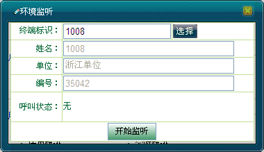
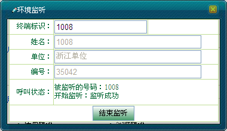
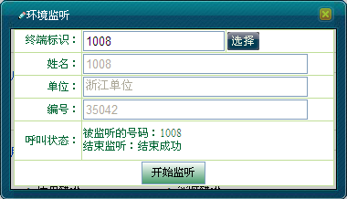
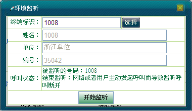

环境监听（Ambience Listening，简称AL）的实质是调度台与被监听用户建立了一个特殊模式的半双工单呼，被监听用户不需要确认，也不会收到任何的提示。
环境监听仅在无线用户空闲时才能建立，而一旦环境监听建立，则该无线用户将不能消除该监听和接收其它普通呼叫，但能接受到紧急呼叫。AL呼叫建立后，被监听用户的终端会自动打开麦克风，收集被监听用户周围的声音，再将语音包传输到调度台。
同时，若被监听用户发起呼叫或者接收到紧急呼叫，则对该用户的环境监听自动结束，被监听用户呼叫的发起不被影响，也不会察觉自己被监听过。
调度员可通过地图右键选择呼叫业务菜单中的“环境监听”按钮或者单击[调度功能/呼叫面板]下的“环境监听”两种方式进行操作，操作步骤类似，在本节中就只介绍其中一种操作。
 对无线用户进行环境监听的具体操作步骤如下：
对无线用户进行环境监听的具体操作步骤如下：
1）在地图上选中移动用户。
2）单击右键选择［呼叫业务/环境监听］，弹出“环境监听”对话框，如图1所示。

图1. 环境监听对话框
3）单击＜开始监听＞，此时“开始监听”变为“结束监听”，“环境监听”对话框显示如图2所示。

图2. 发起环境监听
4）调度台可以听到移动终端周围的声音。若有其他用户呼叫被监听用户，被监听用户不接受呼入，且监听不受影响。
5）调度员可单击＜结束监听＞按钮结束环境监听，如图3所示。

图3. 结束环境监听
6）若在环境监听过程中，被监听用户主动发起呼叫或者接收到紧急呼叫，则环境监听断开，如图4所示。

图4. 环境监听被呼叫断开
 说明：
说明：
若无线用户不在系统内、关机或者处于通话中，则无法发起环境监听。
同一时刻，一个调度台只能对一个用户进行环境监听。
Copyright © 2012 Eastcom, Inc. All rights reserved. |
||